|
|
I am a professor (教授/博导) in the State Key Lab of CAD&CG, Zhejiang University. I am also a recipient of Excellent Young Scholars (国家优青), NSF-China.
My research interest lies in the acquisition and reconstruction of physical information, including complex high-dimensional appearance, 3D surfaces and volumes.
I received my Ph.D. from Dept. of Computer Science, Yale University, under the supervision by Prof. Julie Dorsey and Prof. Holly Rushmeier. Prior to that, I obtained my B.Sc. from Dept. of Computer Science and Engineering, Fudan University. I was also a visiting student in Internet Graphics Group at Microsoft Research Asia.
Professional Services
Editorial Board of IEEE TVCG, Journal of CAD&CG and VCIBA.Program Committee Member for SIGGRAPH/SIGGRAPH Asia, EG, VR, EGSR, PG, I3D, HPG, CVM and CAD/Graphics.
Reviewer for ACM TOG, IEEE TVCG, CGF, Science China, SIGGRAPH/SIGGRAPH Asia, EG, EGSR, PG, AAAI, C&G.
Conflict-of-Interest(COI) Coordinator for SIGGRAPH/SIGGRAPH Asia.
Reviewer for General Program, NSF China and ISF-NSFC Joint Scientific Research Program.
Secretary of Program Chair, Chinagraph.
Secretary for International Cooperation and Exchange Working Committee, China Society of Image and Graphics.
To Prospective Students
I leverage the knowledge from multiple fields to solve challenging problems in
computer graphics and vision. This involves a lot of different cool things,
including software & hardware programming, and mechanical design. I am looking for talented students with a strong background in one or more of the following fields:
1. Computer Graphics and Vision.
2. Optics.
3. Electrical Engineering.
4. Mechanics/Robotics.
I am open to various ways of engaging in my lab, from being an advisor for your master/PhD study, to a research advisor for your undergraduate study, or just doing a summer intern. Please drop me an email to schedule a meeting, if you are interested in working with me.
Teaching
Computer Graphics (2015-F, 2016-S/F, 2017-S/F, 2018-S/F, 2019-F, 2020-F, 2021-F, 2022-F, 2023-F, 2024-F)
Intelligent Acquisition of Visual Information (2019-F, 2020-F, 2021-F, 2022-F, 2023-F, 2024-F) For students who are unable to register my course due to limited
capacity, please make sure that you select the course in the second round of
registration (补选) and see me in the first class. Please register
the course according to your curriculum (培养计划). For computer science major, please take the
course when you are at least a
junior student (大三), as this course requires the
knowledge from a variety of fundamental courses.
Selected Publications
| 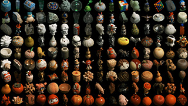 | OpenSubstance: A High-Quality Measured Dataset of Multi-View and -Lighting Images and Shapes Fan Pei, Jinchen Bai, Xiang Feng, Zoubin Bi, Kun Zhou and Hongzhi Wu To appear in ICCV 2025. [Project Page] |
|||
| 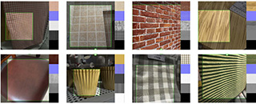 | MaterialPicker: Multi-Modal DiT-Based Material Generation Xiaohe Ma, Valentin Deschaintre, Milos Hasan, Fujun Luan, Kun Zhou, Hongzhi Wu and Yiwei Hu To appear in ACM Trans. on Graph. (Proc. SIGGRAPH 2025). [Paper(.PDF), 38.6MB)] |
|||
| 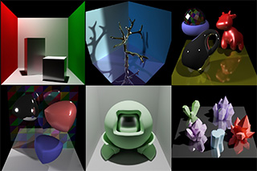 | RenderFormer: Transformer-based Neural Rendering of Triangle Meshes with Global Illumination Chong Zeng, Yue Dong, Pieter Peers, Hongzhi Wu and Xin Tong To appear in ACM SIGGRAPH 2025 Conference Papers. [Project Page] |
|||
| 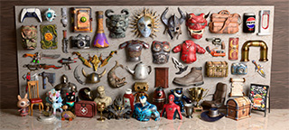 | ARM: Appearance Reconstruction Model for Relightable 3D Generation Xiang Feng, Chang Yu, Zoubin Bi, Yintong Shang, Feng Gao, Hongzhi Wu, Kun Zhou, Chenfanfu Jiang and Yin Yang. CVPR 2025 (Highlight). [Project Page] |
|||
| 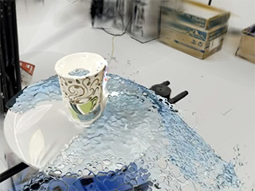 | Gaussian Splashing: Unified Particles for Versatile Motion Synthesis and Rendering Yutao Feng, Xiang Feng, Yintong Shang, Ying Jiang, Chang Yu, Zeshun Zong, Tianjia Shao, Hongzhi Wu, Kun Zhou, Chenfanfu Jiang and Yin Yang. CVPR 2025. [Project Page] |
|||
 |
GS3: Efficient Relighting with Triple Gaussian Splatting Zoubin Bi#, Yixin Zeng#, Chong Zeng, Fan Pei, Xiang Feng, Kun Zhou and Hongzhi Wu To appear in ACM SIGGRAPH Asia 2024. [Project Page] #:contributed equally. |
|||
| 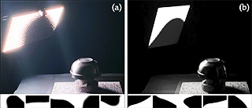 | Learning Photometric Feature Transform for Free-form Object Scan Xiang Feng, Kaizhang Kang, Fan Pei, Huakeng Ding*, Jinjiang You*, Ping Tan, Kun Zhou and Hongzhi Wu To appear in IEEE TVCG. [Preprint(.PDF), 0.9MB] [Supplemental Material(.PDF), 0.2MB] [Video: Youtube/Bilibili] *:(who) was an undergraduate student when working on this project. |
|||
| 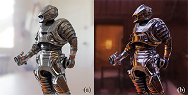 | DiLightNet: Fine-grained Lighting Control for Diffusion-based Image Generation Chong Zeng, Yue Dong, Pieter Peers, Youkang Kong, Hongzhi Wu and Xin Tong ACM SIGGRAPH 2024 Conference Proceedings, Article 73, 1–12. [Project Page] |
|||
| 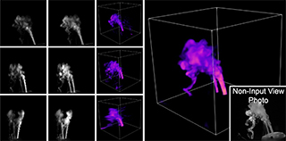 | Real-time Acquisition and Reconstruction of Dynamic Volumes with Neural Structured Illumination Yixin Zeng#, Zoubin Bi#, Mingrui Yin*, Xiang Feng, Kun Zhou and Hongzhi Wu CVPR 2024, pp. 20186-20195. [Project Page] #:contributed equally. *:(who) was an undergraduate student when working on this project. |
|||
| 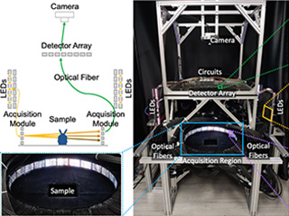 | Differentiable Dynamic Visible-Light Tomography Kaizhang Kang#, Zoubin Bi#, Xiang Feng, Yican Dong*, Kun Zhou and Hongzhi Wu ACM SIGGRAPH Asia 2023 Conference Papers, Article 102, 1–12. [Project Page] #:contributed equally. *:(who) was an undergraduate student when working on this project. |
|||
| 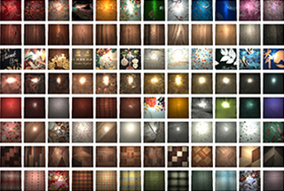 | OpenSVBRDF: A Database of Measured Spatially-Varying Reflectance Xiaohe Ma, Xianmin Xu, Leyao Zhang*, Kun Zhou and Hongzhi Wu ACM Trans. Graph. (Proc. SIGGRAPH Asia 2023), 42, 6 (Dec. 2023), 254. [Project Page] [Graphics Replicability Stamp] *:(who) was an undergraduate student when working on this project. |
|||
 |
Use of Deep-Learning Assisted Assessment of Cardiac Parameters in Zebrafish to Discover Cyanidin Chloride as a Novel Keap1 Inhibitor Against Doxorubicin-Induced Cardiotoxicity Changtong Liu, Yingchao Wang, Yixin Zeng, Zirong Kang, Hong Zhao, Kun Qi, Hongzhi Wu, Lu Zhao and Yi Wang Advanced Science, 2023, 2301136. [Publisher Site (Open Access)] |
|||
| 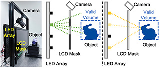 | A Unified Spatial-Angular Structured Light for Single-View Acquisition of Shape and Reflectance Xianmin Xu#, Yuxin Lin#, Haoyang Zhou*, Chong Zeng*, Yaxin Yu, Kun Zhou and Hongzhi Wu CVPR 2023, 206-215. [Project Page] #:contributed equally. *:(who) were undergraduate students when working on this project. |
|||
| 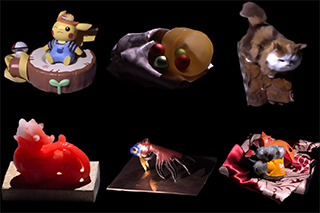 | Relighting Neural Radiance Fields with Shadow and Highlight Hints Chong Zeng, Guojun Chen, Yue Dong, Pieter Peers, Hongzhi Wu and Xin Tong ACM SIGGRAPH 2023 Conference Proceedings, Article 73, 1–11. [Project Page] |
|||
 |
Efficient Reflectance Capture with a Deep Gated Mixture-of-Experts Xiaohe Ma, Yaxin Yu, Hongzhi Wu+ and Kun Zhou To appear in IEEE TVCG. [Preprint(.PDF), 8.4MB] [Video: Youtube/Bilibili] +:corresponding author. |
|||
| 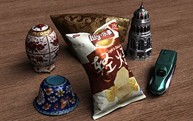 | Neural Reflectance Capture in the View-Illumination Domain Kaizhang Kang, Minyi Gu, Cihui Xie, Xuanda Yang*, Hongzhi Wu+ and Kun Zhou IEEE TVCG, 29, 2(Feb. 2023), 1450-1462. [Preprint(.PDF), 6.5MB] [Video: Youtube/Bilibili] [IEEE Xplore] +:corresponding author. *:(who) was an undergraduate student when working on this project. |
|||
| 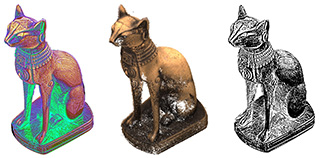 | DiFT: Differentiable Differential Feature Transform for Multi-View Stereo Kaizhang Kang, Chong Zeng*, Hongzhi Wu+ and Kun Zhou [arxiv] +:corresponding author. *:(who) was an undergraduate student when working on this project. |
|||
| 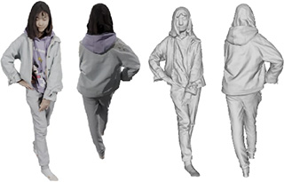 | Learning Implicit Body Representations from Double Diffusion Based Neural Radiance Fields Guangming Yao, Hongzhi Wu, Yi Yuan, Lincheng Li, Kun Zhou and Xin Yu IJCAI-ECAI 2022. |
|||
| 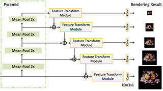 | A Multi-Resolution Network Architecture for
Deferred Neural Lighting Shengjie Ma, Hongzhi Wu, Zhong Ren and Kun Zhou CASA 2022. |
|||
 |
Learning Efficient Photometric Feature Transform for Multi-view Stereo Kaizhang Kang, Cihui Xie, Ruisheng Zhu, Xiaohe Ma, Ping Tan, Hongzhi Wu+ and Kun Zhou ICCV 2021 (pp. 5956-5965). [Project Page] +:corresponding author. |
|||
 |
Free-form Scanning of Non-planar Appearance with Neural Trace Photography Xiaohe Ma, Kaizhang Kang, Ruisheng Zhu, Hongzhi Wu+ and Kun Zhou ACM Trans. Graph. (Proc. SIGGRAPH 2021), 40, 4 (Aug. 2021), 124. [Project Page] +:corresponding author. |
|||
 |
Differentiable Rendering: A Survey (in Chinese) / 可微绘制技术研究进展 Weiwei Xu, Yang Zhou, Hongzhi Wu and Jie Guo Journal of Image and Graphics, 26, 6 (2021). [Paper] |
|||
 |
Learning Efficient Illumination Multiplexing for Joint Capture of Reflectance and Shape Kaizhang Kang, Cihui Xie, Chengan He*, Mingqi Yi*, Minyi Gu, Zimin Chen, Kun Zhou and Hongzhi Wu ACM Trans. Graph. (Proc. SIGGRAPH Asia 2019), 38, 6 (Nov. 2019), 165. (Selected as a back-cover image) [Project Page] *:(who) were undergraduate students when working on this project. |
|||
 |
Efficient Reflectance Capture Using an Autoencoder Kaizhang Kang*, Zimin Chen*, Jiaping Wang, Kun Zhou and Hongzhi Wu ACM Trans. Graph. (Proc. SIGGRAPH 2018), 37, 4 (Aug. 2018), 127. [Project Page] Patent# ZL201810623164.8. 2nd Place in ACM Student Research Competition, Undergraduate Group. *:Joint first authors, both of whom were undergraduate students when working on this project. |
|||
 |
Modeling Hair from an RGB-D Camera Meng Zhang, Pan Wu, Hongzhi Wu, Yanlin Weng, Youyi Zheng and Kun Zhou ACM Trans. Graph. (Proc. SIGGRAPH Asia 2018), 205. [ACM Digital Library] |
|||
 |
A Data-driven Approach to Four-view Image-based Hair Modeling Meng Zhang, Menglei Chai, Hongzhi Wu, Hao Yang and Kun Zhou ACM Trans. Graph. (Proc. SIGGRAPH 2017), 36, 4 (Jul. 2017), 156. [Paper(.PDF), 1.7MB][Video(.MP4),47.7MB] |
|||
 |
Intrinsic Light Field Images Elena Garces, Jose I. Echevarria, Wen Zhang, Hongzhi Wu, Kun Zhou and Diego Gutierrez Computer Graphics Forum, 36(8), 589-599, Dec. 2017. |
|||
 |
Simultaneous Acquisition of Microscale
Reflectance and Normals Giljoo Nam, Joo Ho Lee, Hongzhi Wu, Diego Gutierrez and Min H. Kim ACM Trans. Graph. (Proc. SIGGRAPH Asia 2016), 35, 6 (Nov. 2016), 185. [Paper(.PDF), 17.8MB][Video(.MOV), 36.0MB][Supp. Material #1(.PDF), 0.3MB][Supp. Material #2(.PDF), 46.8MB][Bibtex][Project Page] |
|||
 |
AutoHair: Fully Automatic Hair Modeling from a Single Image Menglei Chai, Tianjia Shao, Hongzhi Wu, Yanlin Weng and Kun Zhou ACM Trans. Graph. (Proc. SIGGRAPH 2016), 35, 4 (Jul. 2016), 116. [Paper(.PDF), 12.4MB][Video(.MP4), 118MB] |
|||
|
|
Real-time Facial Animation with Image-based Dynamic Avatars Chen Cao, Hongzhi Wu, Yanlin Weng, Tianjia Shao and Kun Zhou ACM Trans. Graph. (Proc. SIGGRAPH 2016), 35, 4 (Jul. 2016), 126. [Paper(.PDF), 12.0MB][Video(.MP4), 172MB] |
|||
 |
Simultaneous Localization and Appearance Estimation with a Consumer RGB-D Camera Hongzhi Wu, Zhaotian Wang and Kun Zhou IEEE TVCG, 22, 8(Aug. 2016), 2012-2023. Presented at SIGGRAPH Asia 2016 and Graphics Interface 2016. [Project Page] Patent# CN104866861, Jan. 2018. |
|||
 |
Shape Completion from a Single RGBD Image Dongping Li, Tianjia Shao, Hongzhi Wu and Kun Zhou IEEE TVCG, 23, 7(Jul. 2017), 1809-1822. [Slides(.PPSX), 20.4MB] |
|||
 |
Stress Constrained Thickness Optimization for Shell Object Fabrication Haiming Zhao, Weiwei Xu, Kun Zhou, Yin Yang, Xiaogang Jin and Hongzhi Wu Computer Graphics Forum, 36: 368-380, Sep. 2017. |
|||
 |
AppFusion: Interactive Appearance Acquisition using
a Kinect Sensor Hongzhi Wu and Kun Zhou Computer Graphics Forum, 34(6), 289-298, Sep. 2015. [Paper(.PDF), 10.2MB] [Video(.MP4), 49.1MB] [Presentation(.PPSX), 79.5MB] [BibTex] Patent# CN103955958, Aug. 2016. |
|||
 |
Effects of Approximate Filtering on the Appearance of Bidirectional Texture Functions Adrian Jarabo, Hongzhi Wu, Julie Dorsey, Holly Rushmeier and Diego Gutierrez IEEE TVCG, 20, 6(Jun. 2014), 880-892. [Paper(.PDF), 9.1MB] [Supplementary Material(.PDF), 21.3MB] [BibTex] |
|||
 |
Inverse Bi-scale Material Design Hongzhi Wu, Julie Dorsey and Holly Rushmeier ACM Trans. Graph. (Proc. SIGGRAPH Asia 2013), 32, 6 (Nov. 2013), 163:1-163:10. (Selected for the SIGGRAPH Asia movie trailer) [Project Page] |
|||
 |
Physically-based Interactive Bi-scale Material Design Hongzhi Wu, Julie Dorsey and Holly Rushmeier ACM Trans. Graph. (Proc. SIGGRAPH Asia 2011), 30, 6 (Dec. 2011), 145:1-145:10. (Selected as a back-cover image) [Paper(.PDF), 8.5MB] [Video(.MP4), 30.6MB] [YouTube] [SIGAsia Slides(.PPSX), 29.6MB] [BibTex] |
|||
 |
A Sparse Parametric Mixture Model for BTF Compression, Editing and Rendering Hongzhi Wu, Julie Dorsey and Holly Rushmeier Computer Graphics Forum (Proc. EUROGRAPHICS 2011), 30(2), 465-473. [Paper(.PDF), 4.9MB] [Video(.ZIP), 21.4MB] [YouTube] [EG Slides(.PPSX), 4.7MB] [BibTex] |
|||
 |
Characteristic Point Maps Hongzhi Wu, Julie Dorsey and Holly Rushmeier Computer Graphics Forum (Proc. EUROGRAPHICS Symposium on Rendering, 2009), 28(4), 1227-1236. [Paper(.PDF), 11.2MB] [EGSR Slides(.ZIP) 2.6MB] [BibTex] |
|||
 |
Context-Aware
Textures Jianye Lu, Athinodoros S. Georghiades, Andreas Glaser, Hongzhi Wu, Li-Yi Wei, Baining Guo, Julie Dorsey and Holly Rushmeier ACM Trans. Graph. 26, 1(Jan. 2007), 3. (Selected as the cover image) [Paper(.PDF), 3.6MB] [Video(.AVI), 22.6MB] [Youtube] [BibTex][Project Webpage] |
|||
 |
Silhouette
Texture Hongzhi Wu, Li-Yi Wei, Xi Wang and Baining Guo Rendering technique (Proc. EUROGRAPHICS Symposium on Rendering, 2006), 285-296. [Paper(.PDF), 4.1MB] [Video(.MOV), 44MB] [YouTube] [EGSR Slides(.PPSX), 12.3MB] [BibTex] |
|||
 |
Computer Graphics: Principles and Practices, 3rd Ed. John F. Hugues, Andries van Dam, Morgan McGuire, David F. Sklar, James D. Foley, Steven K. Feiner and Kurt Akeley, Addison-Wesley, 2013. Translator for the Official Chinese Version. [Basic Topics] by Qunsheng Peng, Xinguo Liu, Lanfang Miao and Hongzhi Wu, China Machine Press, 2018. [Online Store] [Advanced Topics] by Qunsheng Peng, Hongzhi Wu, Rui Wang and Xinguo Liu, China Machine Press, 2021. [Online Store] |
Alumni
Xiaohe Ma (PhD 2025/Meshy)Chong Zeng (MEng 2025/Stanford University)
Yixin Zeng (MEng 2025/Carnegie Mellon University)
Xiang Feng (MEng 2025/UCSD)
Zoubin Bi (MEng 2025/Youku)
Xianmin Xu (MEng 2024/Huawei)
Leyao Zhang (BEng 2024/Georgia Tech)
Mingrui Yin (BEng 2024/UCSD)
Kaizhang Kang (PhD 2023/KAUST/Microsoft Research Asia Fellowship)
Jinjiang You (BEng 2023/Carnegie Mellon University)
Peipei Zhong (BEng 2023/Carnegie Mellon University)
Kangping Hu (BEng 2023/Georgia Tech)
Yaxin Yu (MEng 2023/Alibaba)
Mingqi Yi (MEng 2022/MiHoYo)
Ruisheng Zhu (MEng 2022/Huawei)
Zirong Kang (MEng 2022/Alibaba)
Haoyang Zhou (BEng 2022/ETH)
Qingyi He (BEng 2022/EPFL)
Minyi Gu (MEng 2021/Tencent)
Zimen Chen (MEng 2021/Tencent)
Xuanda Yang (BEng 2020/UCSD)
Ren Liu (BEng 2020/Georgia Tech)
Xiaofeng Zeng (BEng 2020/KTH)
Yaxin Peng (BEng 2020/UIUC)
Cihui Xie (MEng 2020/FaceUnity)
Chengan He (BEng 2019/Yale University)
Zhongshu Du (BEng 2019/UCSD)
Wanpeng Li (MEng 2018/Microsoft/Excellent Graduate Award)
Yiwei Hu (BEng 2018/Yale University)
Wenjia Zhang (BEng 2018/Yale University)
Meng Yuan (BSc 2018/Northwestern University)
Xin Hao (MEng 2018/NetEase Games)
Zhenyu Tang (BEng 2017/UNC Chapel Hill)
Tingting Chen (MEng 2017/Microsoft)
Liran Qin (MEng 2017/YituTech)
Wen Zhang (BEng 2016/UCSD)
Zhaotian Wang (MEng 2016/Google USA/Excellent Graduate Award)
Note
I write recommendation letters for students that closely work with me on one or more research/engineering projects. For students who take my courses only, I cannot write the letters due to highly limited interactions.